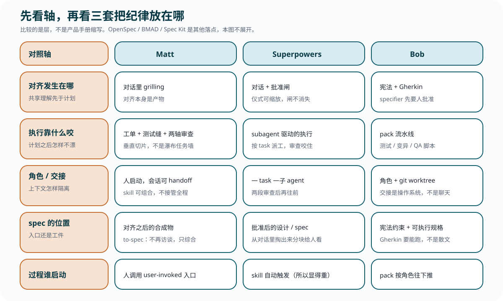

对齐发生在哪
共享理解是在对话里达成，还是写进一份尚未对齐的文档里假装达成。
Lesson 0002
这节课先摆轴，再看 Matt / Superpowers / Bob 各自落在哪。你关心的是纪律压在哪一层，不是三份手册的缩写。没读过那三个仓库也能跟上。
上一课的五个洞是问题坐标系。对照用下面五条轴，否则三套方法会被比成「谁功能更多」。
共享理解是在对话里达成，还是写进一份尚未对齐的文档里假装达成。
计划之后，靠工单、测试、审查、变异还是角色流水线，让实现不漂。
上下文是同一会话里压缩，还是按 task / 角色 / git worktree 切开。
规格是对齐之前的出发令，还是对齐之后的合成物。下一课会把这句钉死。
人点名调用，还是 skill 自动触发，还是 pack 按角色往下推。这决定「重」从哪来。

mattpocock/skills 自称可组合的小 skill，明确对照那些「拥有全过程」的脚手架（README 点名 GSD、BMAD、Spec-Kit）。主线可以记成：grilling 对齐 → to-spec 合成规格 → to-tickets 切垂直切片 → implement。路由器是 ask-matt，不是一条强制流水线。
| 轴 | 落点 |
|---|---|
| 对齐 | grilling 把决策树一次问清一条。Howardism 的整理：目标是共享的 design concept，不是先交出计划。 |
| 执行 | 工单是 tracer-bullet；implement 在预先谈妥的测试缝上走 TDD，收口用 Standards / Spec 两轴审查。 |
| 角色 / 交接 | 人启动 user-invoked 入口；会话太大就 handoff。skill 彼此组合，不把人从方向盘上请下去。 |
| spec | 工件，不是入口。to-spec 写明：不要再 interview，只综合已经谈过的。 |
| 谁启动 | 人。agent 不会自己跳上 wayfinder；默认前门仍是 grilling，而不是自动工厂。 |
wayfinder 是多 session 决策地图，计划而不做。它自己警告全面规划会掉进瀑布。可选深链：mattpocock-skills 仓库学习课——以该仓库为对象，先建立地图，再沿 ask-matt 主流程精读。
obra/superpowers 自称 complete methodology：可组合 skill，加上「确保 agent 会去用它们」的初始指令。README 里的基本工作流是 brainstorming → worktree → writing-plans → 执行环 → TDD → code-review → finish。执行环是 subagent 驱动的执行（按 task 派子 agent，或批次执行加人工检查点）。它和业界常说的「规格驱动」不是同一件事，下一课再拆开那组撞名。
| 轴 | 落点 |
|---|---|
| 对齐 | brainstorming 先把任务分成 spike / bounded / architectural。仪式随任务缩放，批准闸不随任务消失。 |
| 执行 | 计划写给「热情但判断力差的初级工程师」。子 agent 按 task 推进；TDD 与 per-task review 咬住，功能出现不等于工作流结束。 |
| 角色 / 交接 | 一 task 一颗新鲜子 agent；两段审查（是否符合 spec，然后代码质量）过了才往前。 |
| spec | 从对话里掏出来，分块短到人真能看完，签字后再写 plan。规格仍是对齐之后的工件，只是生产它的过程由流程强制。 |
| 谁启动 | using-superpowers 的硬门槛：有 1% 可能适用就必须先调 skill。「觉得 overkill 往往是在跳流程」写在红旗表里。 |
「太重」落在轴上，不是口味。重的是强制触发（过程谁启动）加上按 task 派工的执行工厂（执行怎么咬住），不是 skill 卡片的张数。
可选深链：obra superpowers skill 学习课——以该仓库为对象，先建立「skills 库 + harness 接线 + 七步工作流」地图，再精读关键 skill。
unclebob/swarm-forge 在 main 上放共享脚本和宪法，可运行的是 pack 分支。agent 在不同 git worktree 里按角色工作，用交接协议而不是同一段聊天往下挤。two-pack 是 coder → cleaner；four-pack 加上 specifier 与 architect，意图先变成 Gherkin 再实现；six-pack 再把清理、硬化、QA 拆成独立角色。
| 轴 | 落点 |
|---|---|
| 对齐 | 共享宪法是所有角色的法；four / six-pack 里 specifier 把用户意图写成精确 Gherkin，批准后才交接。 |
| 执行 | pack 流水线。TDD、验收测试、变异硬化、QA 脚本是咬合力，不是写完再补的文档。 |
| 角色 / 交接 | 一角色一 worktree；handoff 走 git 与消息，而不是「同一个上下文里换一顶帽子」。 |
| spec | 宪法和 pack 本地法是约束入口；Gherkin 是要能跑的规格。散文规格不是这台机器的燃料。 |
| 谁启动 | 人选定 pack 并启动 swarm 之后，角色按流水线推进，完成时广播。 |
难读，是因为它是操作系统，不是一段没写好的 prompt。角色、宪法、可执行验收叠在一起，读感会像在啃内核；把它误判成「提示词太绕」，会看丢它真正在隔离的那一层。
可选深链：unclebook AI工作流 swarmforge 仓库学习课——以 swarmforge/ 为对象，先分清 main 底座与 pack 流水线，再把 two / four / six 整台走完。
Matt 的 README 把 GSD、BMAD、Spec-Kit 写成「拥有过程、换走控制权」的对照。OpenSpec、Kiro 等也落在附近。它们是其他落点：有的把散文规格当入口，有的把过程所有权收到脚手架里。点名是为了避免读者以为世上只有刚才三套；展开留给以后单开的课。
三套修的是同一组洞里的不同层。 Matt 把对齐放在人启动的对话，规格事后合成；Superpowers 用自动触发和批准闸强迫对齐发生，再用子 agent 工厂执行；Bob 把隔离做成角色操作系统，验收必须可执行。
下一课只钉一句 spec 判断，并拆开两个常被写成同一缩写的名字。
三套各自的总入口比任何一张 skill 卡都更值得先看。本课不嵌条文，核对时走 GitHub。